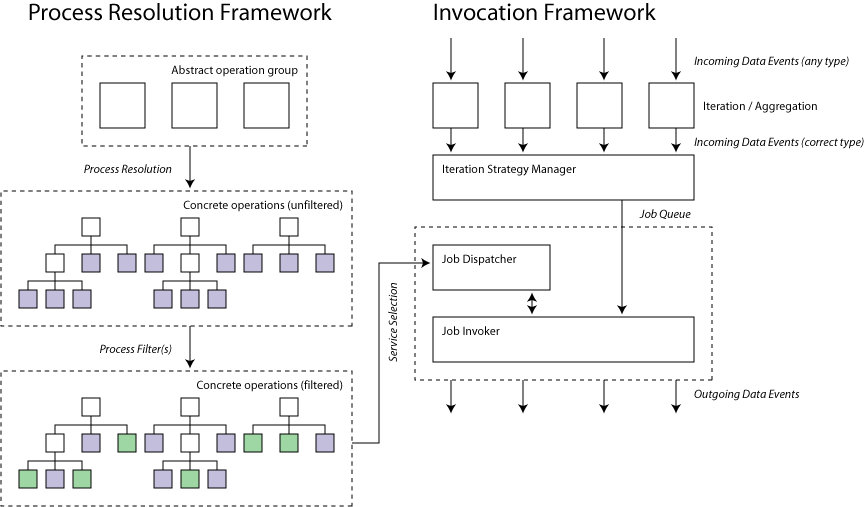

tmo@ebi.ac.uk, 16th May 2005
The concept of a Processor in Taverna 1 has been extended over the lifetime of that system to incorporate two extended features - implicit iteration and fault tolerance. These features were added in an ad hoc fashion to an existing process model rather than being designed in from the beginning which has led to several issues. The first is that the workflow enactment core is not aware of the iteration or fault tolerance. This lack of awareness between the layers in the execution stack leads to inefficient invocation (all iterations must complete before any child processes can start) and renders some features (dispatch of iterations to multiple processors) impossible to implement cleanly. This process model redesign is intended to provide the following features to the workflow core:
The diagram below shows the various stages and software components in a single Taverna 2 process. The section on the left refers to the specification and resolution of the process whereas that on the right describes its invocation.

A data event in this context consists of a single Taverna DataThing object with associated LSID and MIME type metadata. The interface to DataThing is unlikely to change significantly although the implementation will be enhanced to allow backing stores other than system memory.
At runtime each processor is presented with a map of named inputs corresponding to data links in the workflow model. For each input an Iteration / Aggregation module is created. This module accepts data events and either splits and emits finer grained events or waits for completion of the event stream and emits an aggregate depending on whether the type (collection structure) of the incoming events is coarser or finer than that desired.
The Iteration Strategy Manager component is responsible for the combination of the events from the Iterator / Aggregator units into a queue of independant jobs. Each job consists of a map of named input DataThing objects of the type declared by the abstract processor and an array of integer indices into the target location within the result collections.
The Job Dispatcher is responsible for removing jobs from the queue, allocating concrete service instances and passing pairs of job and service to the invoker. This involves resolution of the abstract operation group into a single concrete operation - it is at this stage that plugable service selection mechanisms are implemented such as shim insertion or reliability based selection. As the Job Dispatcher is stateful per process it can also perform tasks such as round robin dispatch of jobs to a set of concrete instances. The resolution process takes advantage of time limited caching - each node in the tree of concrete services can declare an expiry time - if the Job Dispatcher sees a node which has expired it requests re-resolution of the process tree from that point downwards. This allows long running iterations to dynamically inspect the state of the service world at invocation time rather than at the point the iteration started while remaining reasonably efficient.
Process resolution is performed by recursively transforming any abstract operation into either another abstract operation (or set thereof) or into a concrete operation. This results in a tree of concrete operations for each abstract operation in the operation group where the leaf nodes are concrete operations that can be used in a single job invocation. The resolution mechanism is itself plugable and allows multiple levels of filtering after the initial tree composition stage.
The Job Invoker is responsible for applying each job to a concrete service specified by the Job Dispatcher. This may involve re-scheduling the job by passing control back to the Job Dispatcher (for failover type semantics). Recursion is implemented by a configurable invoker and therefore happens per-iteration rather than per-processor.